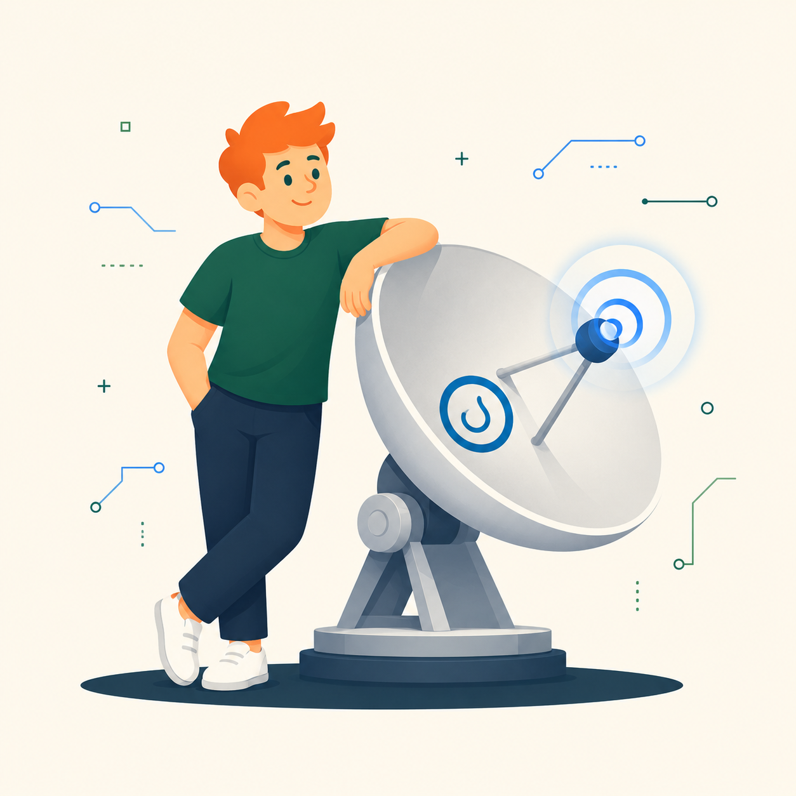
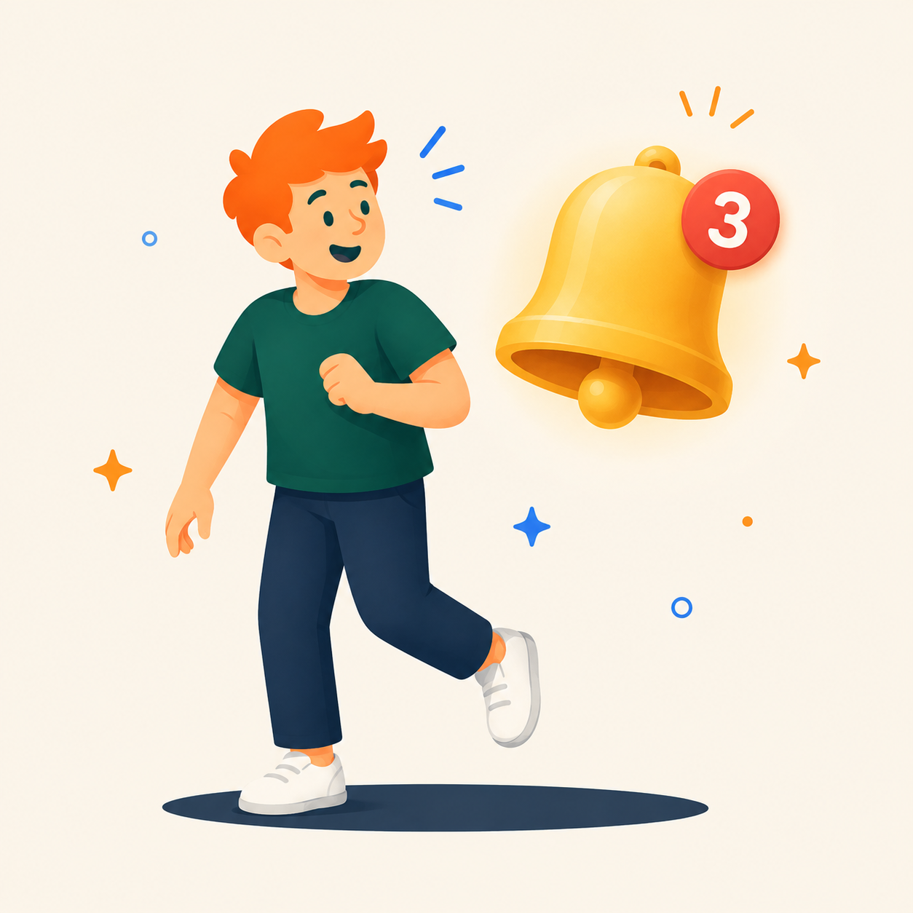
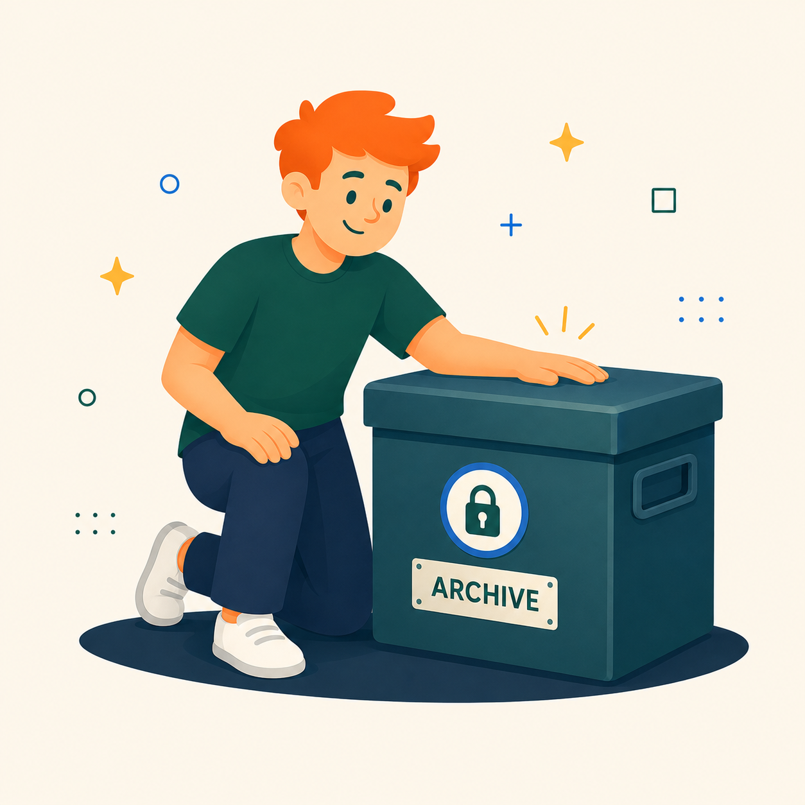
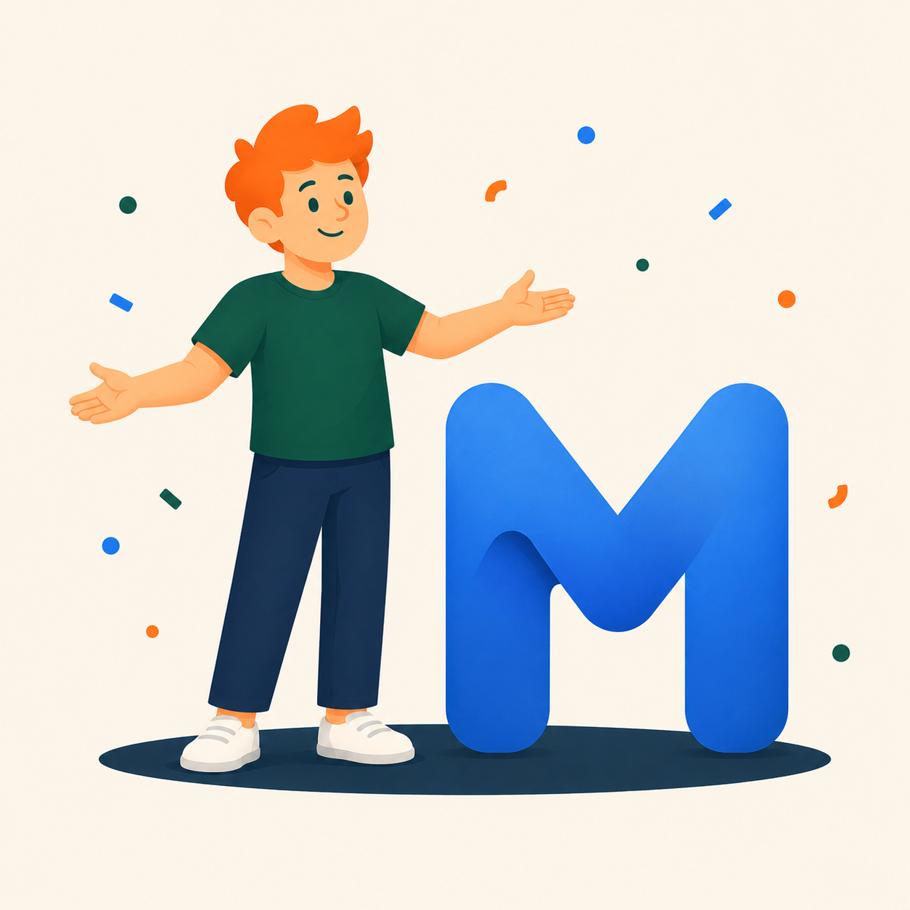

التطبيق يعمل في الخلفية ويفحص المشاريع الجديدة بشكل دوري دون أي تدخل منك.

استقبل تنبيهًا سطحيًا بمجرد اكتمال بيانات المشروع، فتحه ينقلك مباشرة إلى تفاصيله.

تُحفظ جميع المشاريع محليًا على جهازك — بلا حساب وبلا اعتماد على أي خادم سحابي.
بحث متقدم في العنوان والوصف والمهارات والميزانية ضمن كل ما رصدته من قبل.
اختر استعلامًا يساعدنا على عرض المشاريع الأقرب لاهتماماتك. يمكنك تغييره لاحقًا من الإعدادات.
استخدم الفواصل بين القيم، وسنرتب النتائج حسب اهتماماتك.

يمكنك تعديل استعلام البحث وفترة الفحص لاحقًا من الإعدادات في أي وقت.